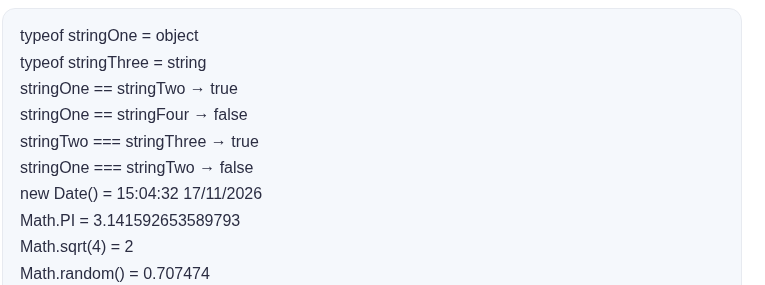

js
.
practice
← Lab08 / Danh sách bài
JavaScript Labs
/
Lab08
/
08.6
LAB08 / EXERCISE 06
Built-in JavaScript Objects
Phân biệt String object và primitive; Date, Math.
Kết quả thực hành
Mở ảnh lớn ↗

Mở phần thực hành
Thử trực tiếp
Tạo số ngẫu nhiên mới